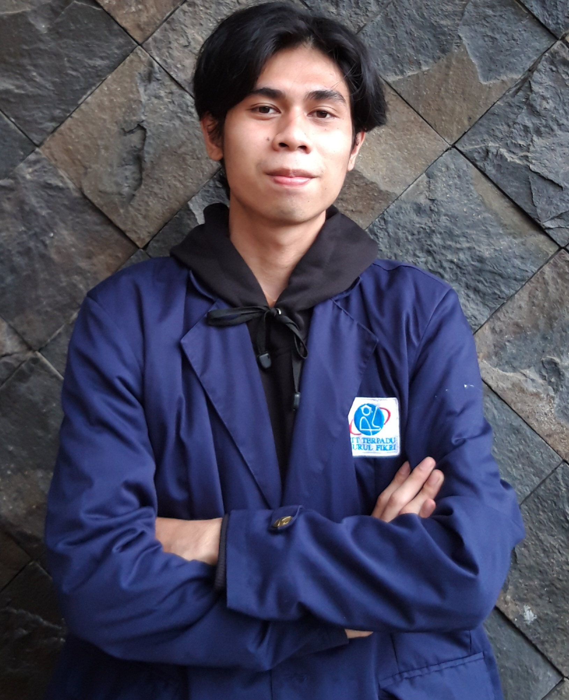

My Profile
Hai perkenalkan saya Ammar Mubarok Robbani Dari Prodi Teknik Infomatika Sekolah Tinggi Teknologi Terpadu Nurul Fikri, Saat ini saya sedang menempuh semester 7.Kesibukan saya sehari hari ialah rebahan dan yang paling asik rebahan di kasur hingga larut malam. Selain asik rebahan saya juga aktif dalam membawa sebuah perubahan bagi mahasiswa,dengan cara mengikuti organisasi Kampus yaitu Badan Eksekutif Mahasiswa atau yang biasa disebut dengan BEM.Karena saya ingin kaum rebahan seperti saya ini dapat membawa sebuah perubahan.
Riwayat Pendidikan
- STT Terpadu Nuru Fikri - Sekarang
- SMK Bina Informatika - 2019
- SMP Negri 17 Bogor - 2016
- SDN Pambudi Dharma Cimahi - 2013
Riwayat Organiasi
- Wakil Ketua BEM STT NF - 2022
- Staff Divisi Dikor BEM STT NF - 2021
- Staff Divisi Senior BEM STT NF - 2020
- Ketua Bidang Kerohanian OSIS- 2015